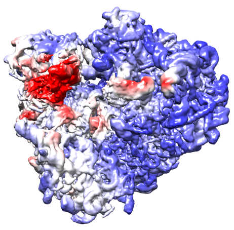

KTH Royal Institute of Technology, Stockholm
Application deadline • TBA
How to apply• TBA
Contact • Kathlén Kohn kathlen@kth.se
The research group on Applied Algebraic Geometry in Data Science and AI led by Kathlén Kohn at KTH Stockholm has two open postdoctoral positions:
Many machine learning models rely on optimization procedures that fit various parameters to a given training dataset. While the convergence behavior of classical methods (such as shrinkage models, decision trees, and support vector machines) is relatively well understood, less is known for deeper models, such as neural networks. A similar problem occurs for models based on low-rank matrix factorization. Both methods involve non-convex optimization and convergence to global minima is not guaranteed. Nonetheless, neural networks and low-rank matrix factorization achieve impressive results in a wide variety of tasks. Understanding the convergence behavior of these and characterizing the resulting models is therefore of great importance. Recent work has started illuminating these questions for specific classes of neural networks and matrix factorization methods. Other work has focused on characterizing the properties of the networks once converged. The successful candidate will work on extending these results by combining ideas from algebraic geometry and statistical signal processing, while anchoring the theoretical analysis in concrete problems in computer vision and cryogenic electron microscopy (cryo-EM). One of the following projects, each illuminating different aspects of the above problem, possibly in combination with one or two side projects, will form the core research subject of a doctoral thesis.
These transforms were introduced as convolutional networks with fixed weights that guarantee certain invariance and stability properties with respect to translation and deformation. By explicitly encoding these symmetries, networks consisting of scattering transforms followed by a linear layer have achieved significant success in various classification and regression tasks. Since only a single linear layer is optimized, the problem becomes convex and a global optimum is easily found. In addition, the fixed structure of the scattering transform and the relative simplicity of the linear layer simplifies analysis and increases interpretability of the model. Understanding these networks therefore amounts to characterizing the space of linear combinations of scattering transform coefficients. Determining the properties of this space would specify the limitations of these networks and suggest extensions that would increase their expressivity.
An important aspect of autoencoders is their ability to memorize the training data, which has been recently explored from a dynamical systems perspective. Empirical results suggest that training examples form attractors of these autoencoders, but the theoretical reasons behind that mechanism are still not clear. Algebraic techniques can be applied in the setting of ReLU autoencoders with Euclidean loss, as the underlying geometric problem is to find a closest point on a semi-algebraic set. An open conjecture is that all training examples are attractors in a (global) minimum of the Euclidean loss of a sufficiently deep ReLU autoencoder. This project would investigate that conjecture as well as further conditions under which attractors are formed.
As linear networks are the easiest type of neural networks, many of their properties are well understood, including the structure of their critical points when using the Euclidean loss function. However, it remains an open problem to show that generic initializations of the network converge under gradient flow to a global minimum. Another project is therefore to investigate this conjecture and possibly expand it to other types of networks or loss functions.
 A similar behavior is observed in low-rank matrix models. Recent work has shown that global convergence is possible under certain settings of linear matrix measurement using Gaussian matrices. However, this convergence behavior is observed for much wider classes of measurement operators. In particular, replacing the Gaussian sensing matrices with certain integral operators representing tomographic projection, global convergence is observed in a wide range of configurations. This particular setup has applications to the heterogeneity problem in cryo-EM, where a low-rank factorization model can be used to characterize the structural variability of three-dimensional density maps representing the imaged molecule. This project would investigate this behavior and extend previous convergence results to wider settings of measurement operators.